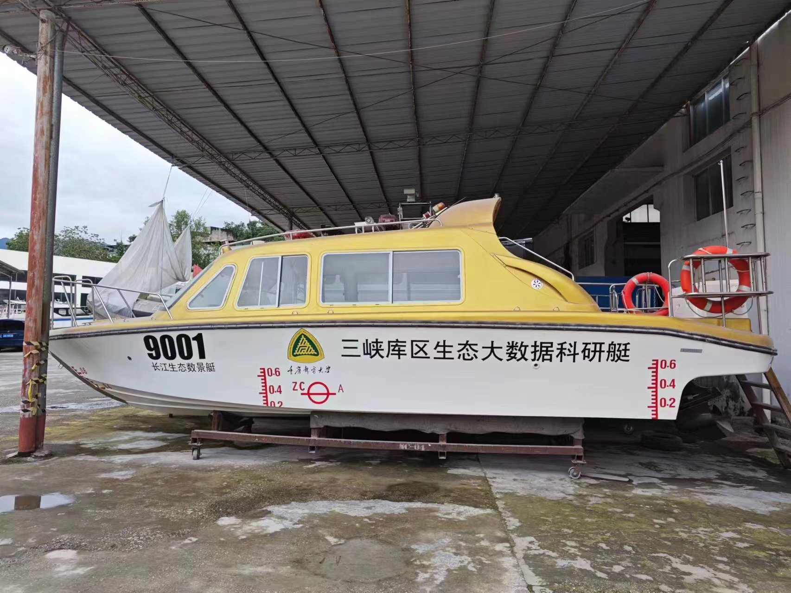
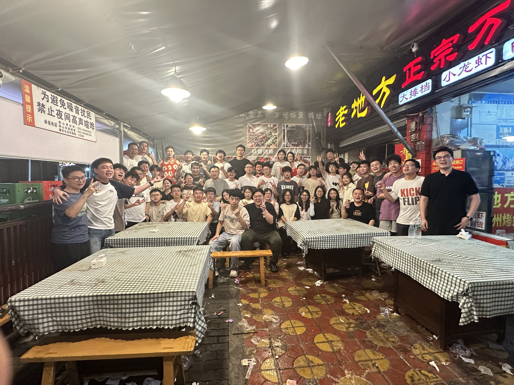
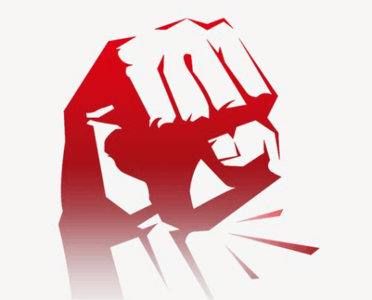

人生漫长且充满未知，在漫漫人生路中会遇到很多选择，选择考研应该是大家经过深思熟虑，做了自己想做的事吧。在研究生阶段想成为什么样的人，也会取决于你的选择。
在这里，国家级、省部级科研项目可以为我们提供大展拳脚的平台，图像处理、嵌入式系统开发等方向总有我们发光发热的余地。充足的科研经费，也为我们的科研环境提供了强有力的保障。多做项目，这是一种选择，让自己的项目经历更加的充实，在实践中不断地完善自己、充实自己。这样你会发现，当你找工作时会更加轻松。简历也会变得丰富多彩。
信息化项目管理方向，是团队的一个重点方向之一。信息化项目管理方向即信息化工程项目建设监理，主要依托团队的合作企业开展工作与学习。让每一位研究生都有提前到公司锻炼的宝贵机会，在学习的同时提升自己技术应用、项目管理以及协调组织等多方面的能力。这也是一种选择，不仅是一次锻炼的机会，更是肩上的一份责任。你可以更直观地了解到项目运营的流程，为日后走进社会积累经验；你可以更快速地见识到更大的世界，跳出学校的舒适圈；你可以更有效地提升沟通能力，每一个项目都是实战。

当然上面所说是选择自己的研究生方向，对于研究生生活而言，做出的选择远远不止这些。
在研0暑假时，你可以选择早早来到学校接受实验室的培训，为快速适应研究生生活、增进彼此的感情打下良好的基础；在研0暑假时，你可以选择和自己的伙伴准备节目，为出游增光增采；在研一课余时间，你可以选择参加各种比赛，丰富自己的比赛经历；在研一上课期间你可以选择认真听讲，为期末评奖而努力；

既然选择了读研那么就要克服所遇到的一切困难，增加自己各方面的能力，遇到困难不要退缩，就像老师说的那样：“如果什么事情都想通了那为啥还要来读研究生？”说了那么多，汇聚一句话：选择通软，成为你自己想要成为的人！
